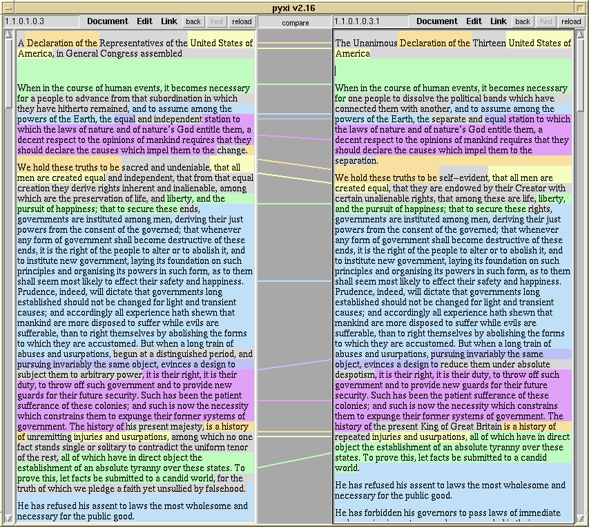

|
Udanax
Green |
Udanax Green, formerly known as Xanadu 88.1, was in active development from 1979 (by the Swathmore team) through 1988 (by Udanax.com, then known as Xanadu Operating Company or XOC).
The Manual
The Frontend-Backend protocol, named FeBe, is the protocol by which a Frontend (browser) communicates with an Udanax Green Backend (server). The FeBe Manual explains this protocol, as well as the external semantics of the Backend (the meaning of the Backend as seen through the protocol).
Current Status
Our Status Page shows a summary of the current development status of both the frontend and backend software.
The Software Itself!
Visit our Download Page to get the actual software -- both backend and frontend.
The Example
Current front end dataset is a comparison of Thomas Jefferson's June 28, 1776 Rough Draft for the Declaration of Independence and the final version of the Declaration of Independence dated July 4, 1776.
This example illustrates how the Udanax hypertext is able to show the evolution of the versions of the documents. The Udanax system, directly tracks the versions. To create this demo, we imported the Rough Draft, created an new version, and made the needed edits. The Udanax code keeps tracks of the edits and the portions that remain the same. The "transpointing window" allows for the two versions to be displayed side-by-side and the connections identified.

Others have used hypertext to tell the same story of the versions of the Declaration of Independence. See The Hypertext Declaration of Independence and The Unanimous Declaration .... Note however, that changes between the documents in these are manually entered as links and that it is difficult to easily compare versions.